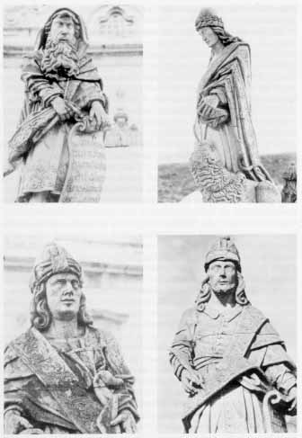

Antonio Francisco Lisboa (el Aleijadinho) (1730-1814)
Escultor y arquitecto brasileño. Su apodo lo adquirió debido a una enfermedad (sífilis terciaria o reumatismo deformante), que poco a poco deformó su fisonomía. Se dice que vivía envuelto en una capa negra y que siempre llevaba un gran sombrero tras el que escondía su cara. Está considerado como uno de los escultores barrocos más importantes americanos. Su obra maestra es el conjunto escultórico de los 12 profetas, erguidos en el atrio del Santuario de la iglesia del Bom Jesus de Matozinhos, en Congonhas do Campo.
Estatuas de los profetas en la iglesia de Congonhas do Campo, esculpidas por Aleijandinho.